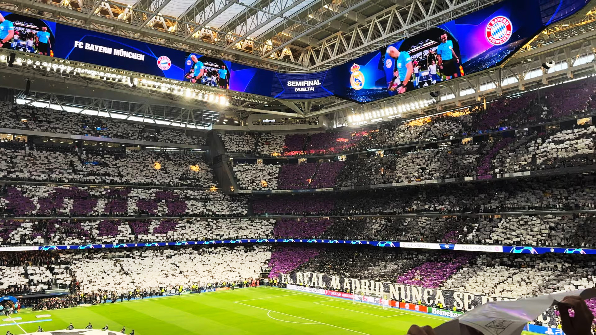
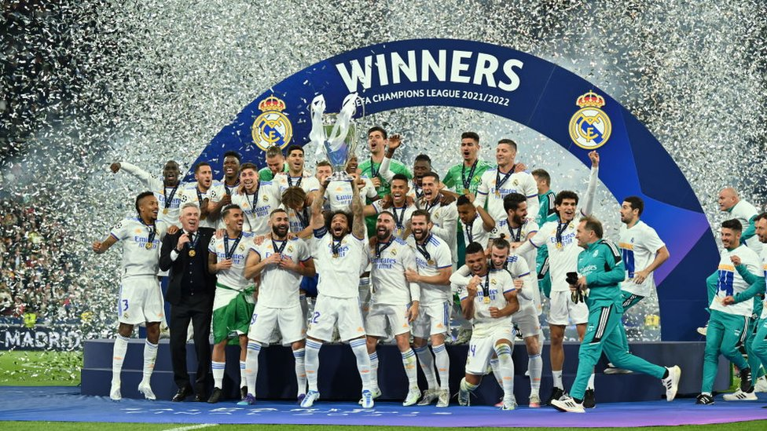

نادي مدريد الملكي لكرة القدم (بالإسبانية: Real Madrid Club de Fútbol)، المعروف باسم ريال مدريد، هو نادي كرة قدم محترف إسباني أُسِّسَ في 6 مارس 1902، مقره العاصمة الإسبانية مدريد. يلعب في الدوري الإسباني واختير أفضل فريق كرة قدم في القرن العشرين، وقد فاز بالدوري الإسباني 36 مرة (رقم قياسي)، وعشرون مرة بكأس ملك إسبانيا وأحرز رقمًا قياسيًا بحيازته 15 بطولة في دوري أبطال أوروبا. وهو أيضا أحد أعضاء جي–14 للأندية القيادية في أوروبا التي أُلغِيَت حاليًا واستبدلت برابطة الأندية الأوروبية.
ظهر النادي بقوة على ساحة كرة القدم الأوروبية والإسبانية خلال عقد الخمسينيات من القرن العشرين، وبحلول عقد الثمانينيات من القرن سالف الذكر كان هذا النادي يتمتع بإحدى أفضل الفرق الرياضية في أوروبا، المعروفة باسم «خماسي النسر» (بالإسبانية: Quinta del Buitre)، الذي فاز بكأس الاتحاد الأوروبي (الدوري الأوروبي حاليًا) مرتين متتاليتين، وخمس بطولات إسبانية، وكأس إسبانيا مرة واحدة، وثلاثة كؤوس سوبر إسبانية. يُعد واحدًا من ثلاثة أندية إسبانية لم يسبق لها أن هبطت من قمة كرة القدم الإسبانية، إلى جانب أثلتيك بلباو وبرشلونة، كما أنه أحد أوسع النوادي من حيث القاعدة الشعبية حول العالم. ويشتهر النادي كذلك بمنافسته طويلة الأمد مع ناديا برشلونة وأتلتيكو مدريد، حيث تعرف المنافسة الأولى باسم الكلاسيكو (بالإسبانية: El Clásico)، والثانية باسم ديربي مدريد (بالإسبانية: El Derbi madrileño).
يلعب الفريق جميع مبارياته الرسمية في ملعب سانتياغو برنابيو في العاصمة مدريد. ويختلف هذا النادي عن العديد من الأندية الأخرى حول العالم، كونه مملوكًا لأعضاء النادي (socios) الذين يسيرون أمور ناديهم باختيار رئيس ينوب عنهم في هذا، منذ تأسيس النادي عام 1902. وفي 23 ديسمبر 2000، اختارت الفيفا الفريق الإسباني ليكون «أفضل نادي في القرن العشرين»، ثم اختاره الاتحاد الدولي لتاريخ وإحصاءات كرة القدم بتاريخ 11 مايو 2010 ليكون أفضل ناد أوروبي في القرن العشرين. حصل النادي على وسام الاستحقاق من الفيفا سنة 2004، كما أعاد الاتحاد الدولي سالف الذكر تصنيف ريال مدريد أفضل ناد في العالم سنة 2015، التي تصدر فيها أيضا قائمة أندية الدوري الأوروبي لكرة القدم.
يعتبر ريال مدريد أكبر نادٍ من حيث القاعدة الجماهيرية وذلك حسب دراسة لجامعة هارفارد عام 2007. وأيضًا يعتبر حاليًا أغنى نادي في العالم حسب الميزانية السنوية، وأعلى النوادي قيمةً، إذ تُقدّر قيمته بنحو 1.4 مليار يورو، وقد حقق إيرادات هائلة في سنة 2011، قُدّرت بنحو 438.6 ملايين يورو. بلغت إيرادات النادي وفق قائمة ديلويت لموسم 2014–15 مبلغ 577 مليون يورو وفي المرتبة الأولى لأندية كرة القدم. وفي سنة 2015 قدرت مجلة فوربس قيمة هذا النادي بنحو 3.24 مليار يورو، أي ما يعادل 3.65 مليار دولار، مع ثبات أرباحه السنوية عند 577 مليون يورو تقريبًا
يلعب الفريق جميع مبارياته الرسمية في ملعب سانتياغو برنابيو في العاصمة مدريد. ويختلف هذا النادي عن العديد من الأندية الأخرى حول العالم، كونه مملوكًا لأعضاء النادي (socios) الذين يسيرون أمور ناديهم باختيار رئيس ينوب عنهم في هذا، منذ تأسيس النادي عام 1902. وفي 23 ديسمبر 2000، اختارت الفيفا الفريق الإسباني ليكون «أفضل نادي في القرن العشرين»، ثم اختاره الاتحاد الدولي لتاريخ وإحصاءات كرة القدم بتاريخ 11 مايو 2010 ليكون أفضل ناد أوروبي في القرن العشرين. حصل النادي على وسام الاستحقاق من الفيفا سنة 2004، كما أعاد الاتحاد الدولي سالف الذكر تصنيف ريال مدريد أفضل ناد في العالم سنة 2015، التي تصدر فيها أيضا قائمة أندية الدوري الأوروبي لكرة القدم.
يعتبر ريال مدريد أكبر نادٍ من حيث القاعدة الجماهيرية وذلك حسب دراسة لجامعة هارفارد عام 2007. وأيضًا يعتبر حاليًا أغنى نادي في العالم حسب الميزانية السنوية، وأعلى النوادي قيمةً، إذ تُقدّر قيمته بنحو 1.4 مليار يورو، وقد حقق إيرادات هائلة في سنة 2011، قُدّرت بنحو 438.6 ملايين يورو. بلغت إيرادات النادي وفق قائمة ديلويت لموسم 2014–15 مبلغ 577 مليون يورو وفي المرتبة الأولى لأندية كرة القدم. وفي سنة 2015 قدرت مجلة فوربس قيمة هذا النادي بنحو 3.24 مليار يورو، أي ما يعادل 3.65 مليار دولار، مع ثبات أرباحه السنوية عند 577 مليون يورو تقريبًا
🎥 فيديو عن ريال مدريد
📸 معرض الصور
شعار ريال مدريد

ملعب سانتياغو برنابيو

دوري أبطال أوروبا
